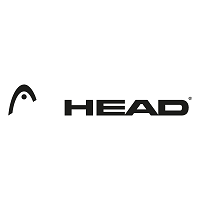

Les différentes marques de raquettes vendues
|
|
Wilson BurnLa plus puissante, qui est axée sur la puissance facile. Wilson UltraCette gamme est orientée sur la polyvalence et une puissance intermédiaire des frappes. Wilson BladeLa gamme estqui est plus exigeante, c'est à dire qu'elle sont puissantes mais aussi légèrement allongée. Cela implique donc une certaine maniabilité à l'utilisation. |
|
|
Babolat Pure AeroLes Babolat Pure Aero sont des raquettes destinées aux joueurs qui veulent avoir de la puissance facile et un bon accès au lift. Babolat Pure DriveIl s'agit d'une gamme composée de raquettes assez polyvalentes mais tout de même assez puissantes. Babolat Pure StrikeCette gamme est composée de raquettes moins puissantes, pour les joueurs qui ont besoin d'un bon contrôle pour éviter les fautes en longueur. |
|
 |
Head ExtremeLes Head Extreme sont des raquettes puissantes qui donnent un excellent accès au lift. Elles sont dans la même catégorie que les Babolat Pure Aero mais elles sont plus puissantes. Elles ont une rigidité assez moyenne ce qui est intéressant pour le confort. Head InstinctLes Head Instinct ont une puissance proche de celle des Head Extreme. L'accès au lift est très correct mais moins facile qu'avec les Head Extreme. Head MXGIl s'agit d'une gamme orientée confort, puissance facile, avec un bon accès aux effets. Head SpeedLes Head Speed sont polyvalentes, confortables et elles donnent une puissance intermédiaire. Elles sont intéressantes pour les joueurs qui veulent un bon compromis puissance/contrôle. Head RadicalLes Head Radical sont assez proches des Head Speed en termes de puissance. Cela réduit un peu la tolérance aux erreurs de décentrage et l'accès au lift. Intéressantes pour les joueurs avec un style de jeu agressif et légèrement lifté qui ont besoin d'un peu de contrôle. Head GravityCes raquettes sont légèrement orientées contrôle et ont la particularité d'avoir une forme de tamis légèrement arrondie au niveau de la zone de frappe. Head PrestigeCes raquettes se destinent à des joueurs qui sont capables de générer de la puissance par leur technique et leur physique, et qui n'ont pas un jeu trop lifté. |
|
|
Tecnifibre ReboundIl s'agit d'une gamme particulière destinée avant tout aux joueuses. L'objectif est de fournir une maniabilité supérieure à celle des raquettes ayant une longueur classique. Tecnifibre TFlashLa gamme Tecnifibre TFlash est composée de raquettes relativement puissantes et polyvalentes. Tecnifibre TFightLa gamme TFight est globalement composée de raquettes moins puissantes que les TFlash. On peut diviser cette gamme en deux : Les TFight : elles auront une puissance moyenne et un accès au lift correct Les TFight 300 : elles seront nettement plus orientées contrôle. Les TFight 305 et 320 vont avoir encore plus de contrôle et moins d'accès au lift, pour les plus gros frappeurs ! |

Les différentes balles utilisées
Les balles molles pour l'initiation des enfants, généralement de 9 à 12 ans.
Les balles intermédiaires pour les joueurs débutants qui ont du mal à faire des beaucoup d'échanges.
Les balles classiques sont destinées aux joueurs réguliers et/ou intensifs.